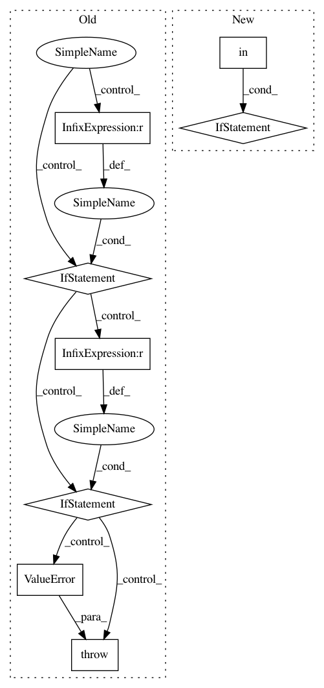

8f22750dbdac281232241c20736018c47a7a8e26,ants/utils/get_ants_data.py,,get_ants_data,#Any#,10
Before Change
if name == "r16":
datapath = os.path.join(data_path, "r16slice.jpg")
elif name == "r27":
datapath = os.path.join(data_path, "r27slice.jpg")
elif name == "r64":
datapath = os.path.join(data_path, "r64slice.jpg")
elif name == "r85":
datapath = os.path.join(data_path, "r85slice.jpg")
elif name == "mni":
datapath = os.path.join(data_path, "mni.nii.gz")
elif name == "surf":
datapath = os.path.join(data_path, "surf.nii.gz")
else:
raise ValueError("data file not found")
return datapath
After Change
datapath = None
for fname in os.listdir(data_path):
if name in fname:
datapath = os.path.join(data_path, fname)
if datapath is None:
raise ValueError("File doesnt exist. Options: " , os.listdir(data_path))
return datapath
In pattern: SUPERPATTERN
Frequency: 3
Non-data size: 8
Instances
Project Name: ANTsX/ANTsPy
Commit Name: 8f22750dbdac281232241c20736018c47a7a8e26
Time: 2017-09-07
Author: ncullen.th@dartmouth.edu
File Name: ants/utils/get_ants_data.py
Class Name:
Method Name: get_ants_data
Project Name: junyanz/pytorch-CycleGAN-and-pix2pix
Commit Name: f27da7d53aaad61ade08a59bd90fef1dadabb1c3
Time: 2019-01-11
Author: taesung89@gmail.com
File Name: data/base_dataset.py
Class Name:
Method Name: get_transform
Project Name: ray-project/ray
Commit Name: b240f5f0c9eeeb572a456c5d517b502e564dff22
Time: 2021-03-16
Author: ekhliang@gmail.com
File Name: python/ray/job_config.py
Class Name: JobConfig
Method Name: __init__